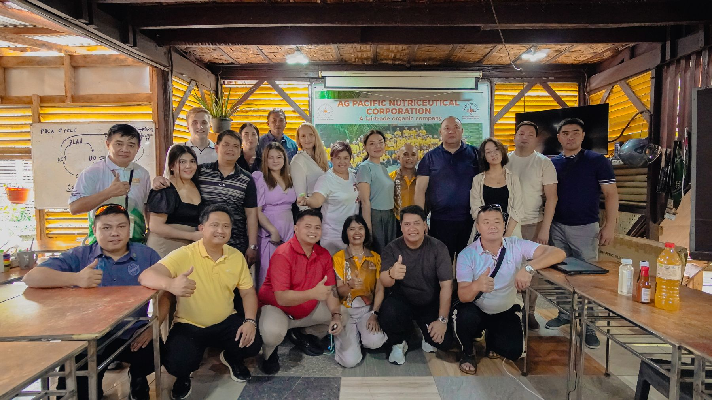

Cavendish Bananas (Grade A)
Class 4-5-6 hands, vacuum-packed in 13.5kg boxes. Year-round supply from Davao/Bukidnon plantations.
FOB Davao / CIF Global
Operating out of Davao Port Hub with continuous Reefer Cold-Chain tracking to Middle East, East Asia, CIS and Europe.

Class 4-5-6 hands, vacuum-packed in 13.5kg boxes. Year-round supply from Davao/Bukidnon plantations.
Fresh calibrated fruit & Grade A dried mango slices in 20kg export master cartons (4x5kg).
Fermented solar-dried Mindanao cacao beans (Criollo/Trinitario hybrids) and high-altitude green coffee beans.
Non-GMO unrefined cane sugar and Low-GI (GI 35) granulated coconut palm blossom sugar in 25kg/50kg multi-wall bags.
Philippine banana chips for wholesale and international distribution.

FRESH / DRIEDFresh and dried formats with harvest, packing and cold-chain planning.
Planning estimate only. Packaging and pallet tare excluded. VCO density: 0.91 kg/L; coconut water: 1 kg/L. Packaging, 7–14 day lead time and route availability require export-desk confirmation. Not a freight quote or a shipment guarantee.